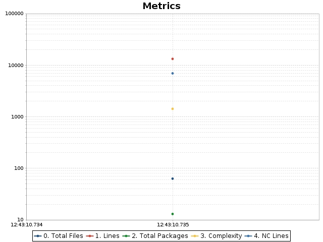
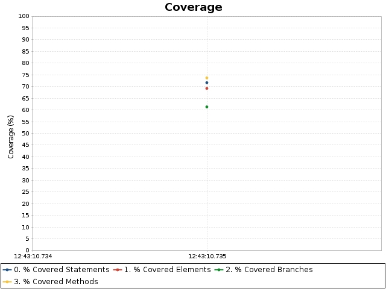

OpenClover
Linked reports
commons-compress
Help
commons-compress
Coverage overview
Added classes
Changed classes
Charts
Historical coverage report
Date range
From:
Thu Jan 26 2023 12:43:10 MST
To:
Thu Jan 26 2023 12:43:10 MST
Code metrics
Branches:
1,450
Statements:
3,703
Methods:
559
Classes:
71
Files:
63
Packages:
13
LOC:
13,268
NCLOC:
6,952
Total complexity:
1,424
Complexity density:
0.38
Statements/Method:
6.62
Methods/Class:
7.87
Classes/Package:
5.46
Average method complexity:
2.55
Branches:
1,450
Statements:
3,703
Methods:
559
Classes:
71
Files:
63
Packages:
13
LOC:
13,268
NCLOC:
6,952
Total complexity:
1,424
Complexity density:
0.38
Statements/Method:
6.62
Methods/Class:
7.87
Classes/Package:
5.46
Average method complexity:
2.55
Coverage overview
Conditionals
Statements
Methods
TOTAL
Project
61.3%
71.6%
73.7%
$sortValue
69.2%
Added classes
Changed classes
Charts

